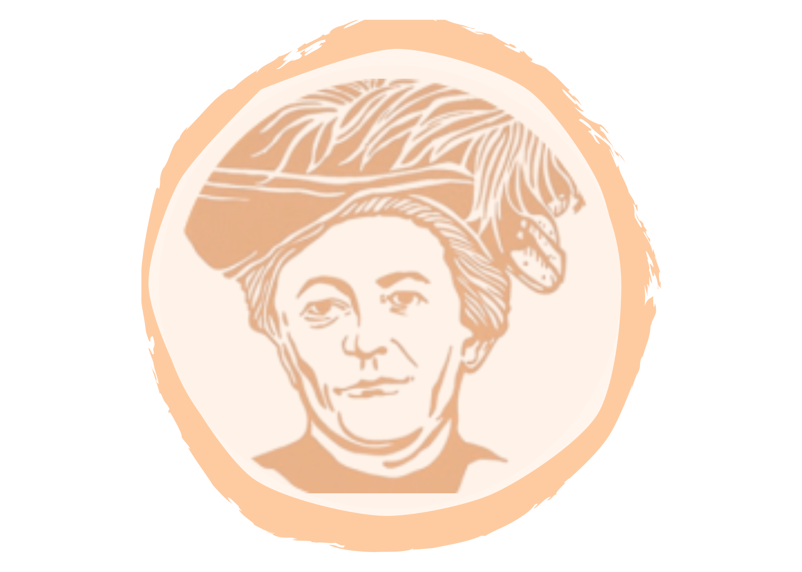

Narraciones
Relatos, cuentos cortos, crónicas y poesías

Gaceta Clara Zetkin Edición Nº 1 · Abril 2026La revista es un espacio de divulgación y reflexión impulsado por trabajadores y trabajadoras de la ciencia y la técnica, activistas por diversos derechos y luchadores sociales. Su objetivo es difundir textos con espíritu crítico que promuevan el debate, el pensamiento transformador y la construcción colectiva del conocimiento.
Pensamiento transformador y debate
Conocimiento desde las bases
Ciencia accesible para todxs
Cada edición reúne diversas voces y formatos
Relatos, cuentos cortos, crónicas y poesías
¿Ciencia para qué? Textos sobre política, cultura, ambiente y actualidad
Diálogos con protagonistas de la lucha social y científica
Recomendaciones y críticas de libros, películas y muestras culturales
Abril 2026
Primera edición de la Gaceta Clara Zetkin con textos fundacionales y voces diversas.
Leer ediciónMayo 2026
Junio 2026
Invitamos a todxs lxs trabajadorxs, activistas e investigadorxs a enviar sus textos. La Gaceta es un espacio abierto y colectivo.